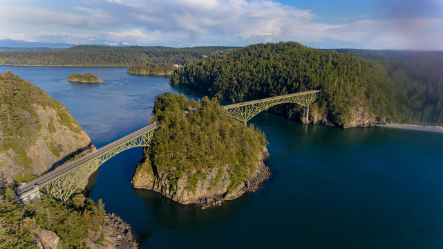
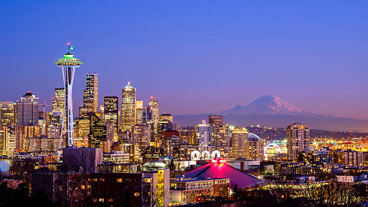
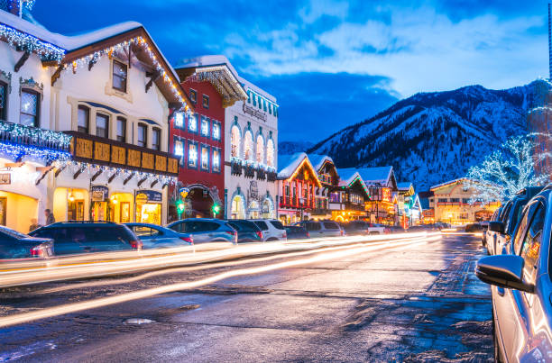

Deception Pass Bridge
Deception Pass Bridge is a very well know spot to see! Located on the north end of Whidbey-Island, Deception Pass Bridge connects the Strait of Juan de Fuca to Skagit Bay. Along with being able to walk along the bridge over the water, Deception Pass also has many trails that follow the water around the bridge that offer other viewpoints as well.
Click here for trails!Seattle
Seattle offers many attractions, starting with the well known Space Needle. The Space Needle has tickets for sale that allow you to purchase access to take a trip to the top and see the 360 view over Seattle as well as eat dinner over the city. Seattle also holds many summer and spring festivals as well as attractions that include the Seattle Art Museum and the Pikes Place Market.
Leavenworth
Leavenworth, Washinton is a Bavarian-style village located in the Cascade Mountains, I would say it is best know for how festive the village gets decorated during christmas time. Leavenworth holds many tours and attractions all year. Click here to view Leavenworths website and attractions!